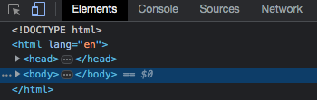

Just like we follow some rules while speaking english (the grammer), we have some rules to folow while writing a javascript program. The sets of these rules is called syntax in javascript.
The value of a javascript variable can be changed during the execution of a program.
var a=7;
let a=7;Primitive data types are a set of basic data types in javascript. Objects is a non primitive datatypes in javascript.
These are the 7 primitive datatypes in javascript. - Null - Number - String - Symbol - Undefined - Boolen - Biglnt
An object in JavaScript can be created as follows
const item = {
name:"Led Bulb",
price:"150/-"
}A fragment of code that produces a value is called an expression. Every value written literally called an expression. Every value written literally is an expression. For ex: 77 or “Javascript”
: greater than
= : greater than or equal to
Sometimes we want our program to contain a text which is not executed by the JS Engine. Such a text is called comment in JavaScript. A comment in Javascript can be written as follows:
let a=2; // this is a single line Comment
/* I am a multiple line comment */
Sometimes comments are used to prevent the execution of some lines of code.
let switch = true; // Switch = false →Commented line won't execute
Sometimes we might have to execute a block of code based off some condition. For example “a prompt might ask for the age of the user and it its greater then 18. display a special message.
In JavaScript we have three forms of if eles Statement.
The if statement in JavaScript looks like this:
if(condition){
// execute this code
}The if statement evaluates the condition inside the () If the condition is evaluated to true, the code inside the body of if is executed else the code is not executed.
The if statement can have an optional else clause. The syntax looks something like this
if (condition) {
// block of code if condition true
}
else { 11 block if if Condition false
}If the condition is true, code inside if is executed else code inside else block is executed
Sometimes we might want to keep rechecking a set of conditions one by one until matches. We use if else if for achieving this.
Syntax of if…else if looks like this
if (age 70) {
Console.log(" A valid age");
}
else if (age > 10 && age > 15 age) {
Console.log(" but you are a kid ");
}
else if (age >18) {
Console.log(" not a kid");
}
else {
Console.log("Invalid Age")
}Exaluates a condition and executes a block of Code based on the condition
Condition ? exp1: exp2
Example syntax of ternary operator looks like this:
(marks > 10) ? 'Yes': 'No'
→ if marks are than 10, you are greater passed else notWe use loops to perform repeated actions. For example - If you are assigned a task of printing numbers from 1 to 100, it will be very hectic to do it manually, Loops help help us automate such tasks.
The syntax of a for loop looks something like this
for ( statement; statement 2; Statement 3) {
// code to be executed
}The syntax of for-in loop looks like this
for (key in object) {
// code to be executed.
}The syntax of for- of bop looks like this for every iteration
for (Variable of iterable) {
//code
}The syntax of while loop looks like this:
while (condition){
// code to be executed
}A JavaScript function is a block of code designed to perform a particular task.
syntax of a function looks something like this:
function myfunc(){
// code
}function binodfunc(parameter1, parameter2){
// code
}binod func(7,8) → Function invocation
Function invocation is a way to use the code inside the function A function can also return a value. The value is “returned” back to the caller
Const sum =(a,b)→{
let c = a+b;
return c;
}
let y=sum(1,3)
console.log(y)v → Prints 4Strings are used to store and manupilate text. String can be created using the following syntax.
let name = " Jay "→ create a string
name.lemgth → This property prints length of the stringStrings can also be created using single quotes
let name = ‘Jay’
Template literals use backtics instead of quotes to define a string.
let name = ‘Jay’
With template literals, it is posible to use both single as well as double quotes inside a string
let sentence = ‘The name “is” Jay’
We can insert variable directly in template literals. This is called string interpolation.
let a = ‘This is ${nmae}’→ Prints ‘This is a Jay’
let name = “Adam D’Angel:”
Similarly we can use " inside a string with double qutes
Other escape sequence characters are as follows - → newlines - tab - carriage return
1. let name = "Harry"
name.length → prints 5
2. let name = "Harry"
name.toupperCase() → prints HARRY
3. let name = "Harry"
name.tolowerCase() → prints harry
4. let name = "Harry"
name.slice(2,4) → print rr
5. let name = "Harry"
name.slice(2) → print rry
6. let name = "Harry Bhai"
let newName = name.replace("Bhai","Bhau")
7. let name1 = "Harry"
let name2 = "Naman"
let name3 = name1.concat(name2,"Yes")
8. let name = "Harry"
let newName = name.triml()strings are immutable. Inorder to acces thr chatacter at an index we use the folowing syntax
let name = "Harry"
name[0] → Prints H
name[1] → Prints aArrays are variable which can hold more than one value.
Const fruits = ["banana","apple","graps"]
Const a1 = [7,"Harry",false] → can be different typeslet numbers = [1,2,7,9]
num[0]→1
num[1]→2let number = [1,7,9,21]
number[0]→1
number.length→4let number = [7,2,40,9]
number[2] = 8 → "numbers" now become [7,2,8,9]
//Arrays are mutable
//Arrays can be changedIn JavaScript, arrays are objects. The types of operator on arrays returns object
const n =[1,7,9]
// type of n → return "objects"Arrays can hold many values under a single name
There are some important arrays methods in JavaScript some of them are as follow:
let n = [1,7,9];
n.toString()→1,7,9
let n = [7,9,13];
n.join("_") → 7-9-13
let n = [1,2,4];
n.pop() // →update the original arrays return the popped value
let a = [7,1,2,8]
a.push(9) //→ modifies the original arrays
//→ returns the new arrays length
let d = [7,8,9,10]
delete d[1] //→ delete is an operator
let a1 = [1,2,3];
let a2 = [4,5,6];
let a3 = [7,8,9];
a1.concat(a2,a3) → Return [1,2,3,4,5,6,7,8,9];
let a = [7,9,8];
a.sort();
const numbers = [1,2,3,4,5];
number.splice(2,1,23,24);
const num = [1,2,3,4];
num.slice(2);
num.sclice(1,3);
Arrays can b looped through using the classical Javascript for loop or through some other methods discussed below
1. forEach loop → calls a function, once for each array element
Const a = [1,2,3]
a.forEach( (value,index,array) → {
// function logic
});
2. map() → Creates a new array by performing some operation on each array element.
Const a = [1,2,3]
a.map ((value,index,array) → {
return value*value;
})
3. filter() → Filters an array with value that passesa test. Create a new array
Const a = [1,2,3,4,5]
a.filter(greater_than_5)
4. reduce method → Reduces an array to a single value
Const n = [1,8,7,11]
let sum = numbers.reduce(add)
5. Array from → used to create an array from any other object
Array.from("Harry")
6. for...of → For of loop can be used to get the values from an array.
7. for...in → for in loopcan be used to get the keys from an array.JavaScript was initiaaly created to make web pages alive. JS can be written right in a web page’s HTML to make it interactive.
The browser has an embedded engine called the JavaScript engine or the JavaScript runtime.
JavaScript’s added in the browser is very limited to protect the user’s safety. For example a webpage on http://google.com cannot access http://codewear.com and steal information from there.
Every browser has some developer tools which makes a developer’s
life
a lot easier. F12 on chrome opens Dev tools

We can also write JavaScript commands in the Console.
The script tag is used to insert JavaScript into an HTML page.
The script tag can be used to insert external or internal scripts.
<script>
alert("Hello")
</script>
// or...
<script src="/Js/thisore.js"></script>The benefits of a separate javascript file is that the browser will download it and store it in it’s cache.
The console objects has several methods, log being one of then. Some of them are as follows:
You will naturally remember some or all of these with time. Comprehensive list can be looked up on MDN
Alert : used to invoke a mini window with a msg.
alert("hello")Promt : used to take use input as string
inp = prompt("Hi","No")Confirm : shows a message and waits for the user to press ok or cance. Returns true for ok and false for cancel.
The exact location & look is determined by the browser which is a limitation.
We have the following when JavaScript runs in a browser.
Windows object represents browser window and provides method to control it. It is a global objecy
DOM represents the page contex as HTML
document.body → Page body as Js object
document.body.style.background = "green" → changes page background to greenThe Browser Object Model (BOM) represents additional objects provided by the browser (host environment) for working with everything except the document.
The functions alerts/confirm/prompt are also a part of the BOM
location.hrey = "https://google.com" → Redirect to another URLDOm tree refers to the HTML page where all the nodes are objects. There can be 3 main types of nodes in the DOM tree:
is at the root and < head> and < body> are its children, etc.
A text node is always a leaf of the tree.
<html>
<head>
<title> hello </title>
</head>
<body>
</body>
</html>Direct as well as deeply nested elements of an elements are called its children.
Child nodes → Elements that are directed children for example head & body are children of < html>
Descendant nodes → All nested elements, children, their children and so on …
Following is always true:
elem.childNodes[0] === elem.firstChild
elem.chidNodes[elem.childNodes.length -1] === elem.lastChild
There is also a method elem.hasChildNodes() to check whether
there are
any child nodes.
Sibling are nodes that are children of the same parent.
alert(document.documentElement.paraNodes);//document
alert(document.documentElement.parentElement);//nullSometimes, we dont want text or comment nodes. Some links only take Element nodes into account for example.
document.previousElementSibling → Previous sibling which is an Element
document.nextElementsibling → next sibling (Element)
document.FirstElementChild → first element child
document.lastElemntChild → last element childCertain DOM elements may provide additional properties specific to their type for convenience. Table element supports the following properties :
table.rows → collection of tv elements
table.Caption → reference to < caption>
table.thead → reference to < thead>
table.tfoot → referena to < tfoot>
table.tbody → Collection of < tbody> elements
table.row → Collection of < tr> inside
tr.cells → Collection of td and th
tr.SectionRowIndex → Index of tr inside enclosing element
tr.rowIndex → Row number starting from 0
td.cellIndex → no of cells inside enclosing < tr>
DOM navigation properties are helpful when the elements are each other. If they close to each are not close to each other, we have some more methods to search the DOM.
This method is used to get the element with a given “id” attribute
let span = clocument get Element By ld ('span')
span.style Color = "red""Returns all elements inside an element matching the given CSS selector
Returns the first element for the given CSS Selector.. A efficient version of elem query Selector All (css) [0]
Returns elements with the given tag name
elements that have the given CSS class.
There are three important methods to search the DOM
consle.log shows the element DOM tree consle.dit shows the element as an object with its propeties.
Used to read tag name of an element → only consist for Element nodes - nodeName → defined for any node (text, comment etc.)
The innerHTMl property allows to get the HTML inside the elements as a string.
The outerHTML property contains the full HTML innerHTML + the element itself.
innerHTML is valid only for element nodes. for other node types we can use nodeValue or data.
provides access to the text inside the element : only text, minus all tags.
The “hidden” attitude and the DOM property specifies whether the element is visible or not.
<div hidden> I am hidden </div>
<div id="element"> I can be hidden </div>
<script>
element.hidden = true;
</script>We can always create custom attribute but the ones starting with “data-” are resvered for programs use. There are available in a property named dataset.
If an element has an attribute named “data-one”, its available as element dataset.one
let div = document.createElement('div') //create
div.className = " alert" // set class
div.innerHTML = "<span> hello</span>"
document.body append(div)Here are some more insertion methods:
This method is used to insert HTML. The first parameter is a code word, specifying where to insert. Must be one of the following:
If we assign something to elem.className, it replaces the whole string of class
Often we want to add/remove/toggle a single class
SetTimeot allows us to run a function once after the interval of time
Syntax of set Timeot is as follows:
let timeID = setTime(function,<delay>,<arg1>,<arg2>)
clearTimeout is used to cancel the evcecution (in case we change our mind.) : For example:
let timeID = setTimeout(() → alert("never"),1000);
clearTimeout (timeID)
setInterval method has a similar suntax as setTimeout :
let TimeID = setInterval (function, < delay>,< arg1>, < ard2>)All arguments have the same meanung. But unlike setTimeout, it runs the function not only once, but regularly after the given interval of time.
To stop further calls, we can use clearInterval(timeID).
An event is a singal that something has happend. All the DOM nodes generates such signals.
Some importants DOM events are :
Events can be handled through HTML attributes
< input value="Hey> onclick="alert('hey)" type="button">Events can also be handled through the onclick property
elem.onclick = function{
alert("yes")
};addEventListner is used to asign multiple handlers to an events.
element.addEventListner(event, handler)
element.removeEventListner(event, handler)When an event happens, the browser creates an events objects, puts details into it and passes it as an argument to the handler
elem.onclick = function(event){
...
}event.type : Event type event.currentTarget : Element that handled the event event.clientx/event.clinty : Coordinates of the cursor
Asynchrouns action are the actions that we initiate now and they finish later. eg. setTimout Synchronoun action are the actions that initiate and finish one-by-one
A callback function is a function passed into another function as an argument, which is then involved inside the outer function to complete an action.
Here is an examples of a callback:
function loadScript(src, callback){
let script.src = src
script.onload = () → callback(script)
document.head.append(script)
}Now we can do something like this:
laod Script('https://http://thecodingchronicles.000webhostapp.com',(script) → {
alert('Script is loaded')
alert(script.src)
});This is called “Callback - based” style of async programming. A function that does something Asynchrounsly should provide a callback argument where we put the function to run after its complete.
We can handles callback errors by supplying error argument like this:
function loadScript (src, called){
script.onload = () → callback(null.Script);
script.onerror = () → callback(new, Error('failed'));
}
//Then inside of loadScript call :loadScript(‘cdn/deep’,function(error, script){
… if (error){
//handle error
}
else
{
// script loaded
}
1,});When we have callback inside callbacks, the code gets difficult to manage
loadScript((…)){ loadScript .. loadScript… loadScript… }let promise = new Promise(function(resolve. reject){
// executor
});resolve and reject are two callbacks provided by javascript itself. They are called ilke this:
resolve(value) → If the job is finished successfully reject(error) → If the job fails
The promises object returned by the new promise constructor has these properties
1.state : Initially pending, then changes to either “fullfilled” when resolved is called or “rejected” when reject is called